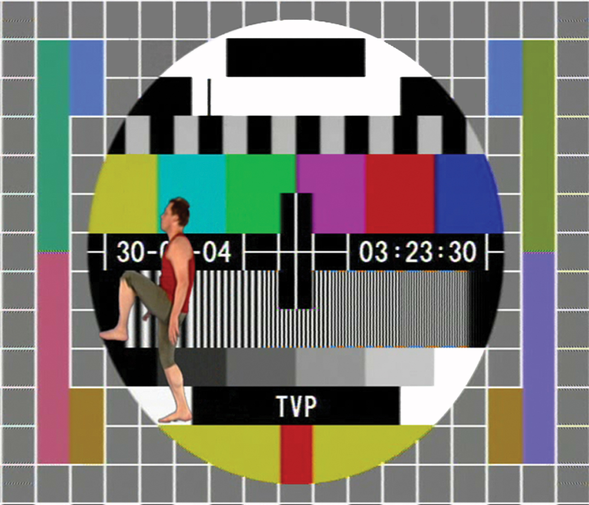
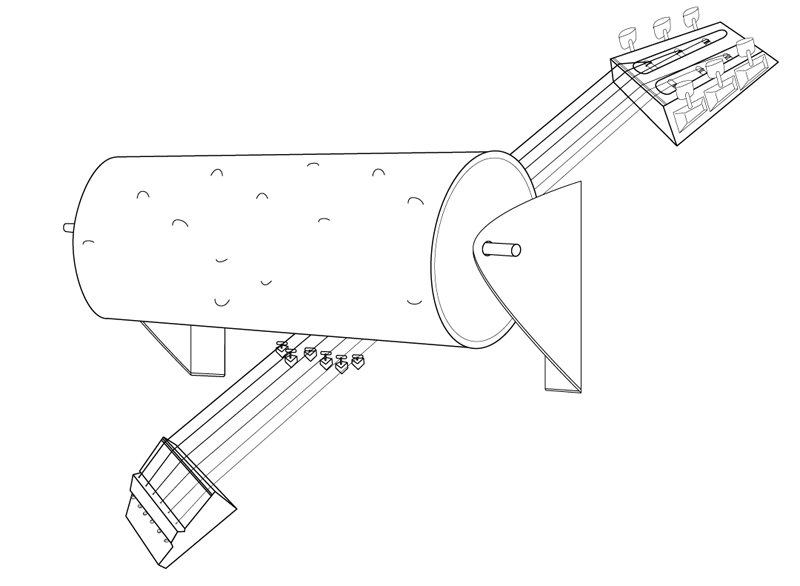

people doing strange things with electricity
The {{1, 2} -> {1, 1, -1}, {1, 1} -> {1, 2, -1}, {1, 0} -> {2, 1, 1}, {2, 2} -> {1, 0, 1}, {2, 1} -> {2, 2, 1}, {2, 0} -> {1, 2, -1}}th dorkbot-nyc meeting took place at 7pm on Wednesday, November 7th, 2007 at Location One in SoHo.
It featured the universal and undecidable:
Some images from the meeting:

Kuba Bakowski: TV Zero Zones
The TV Zero Zones project consisted in nightly broadcasting of four video-animations (one a night) on the TV test-card of Polish National Television TVP 2. TV Zero Zones were shown between September and November 2004 the whole night from the end of the regular program schedule (about 1:30 a.m.) till its start on the following day (about 6:00 a.m.) First prepared in a television studio (blue box) and then computer-processed clips with the moving figure on transparent background were put one after another as picture layers on the TV test-card that Polish Television has emited for nearly 40 years. So, TV Zero Zones was a project which was created at that particular moment, i.e. the moment of emission, from two constituents: traditional, "classic" TV test-card and the author's interference into its structure.
http://www.kubabakowski.net/
Thessia Machado: pluck or dot matrix space resonator
pluck or dot matrix space resonator: composition for exhibition space, freckles, visitors and strings in the key of 1 bedroom apartment is a sound installation with a 6-string custom-built self-playing instrument. Each string is tuned to the frequency value correspondent to the area of each room in a NY apartment. The strings are plucked in a rhythm based on the pattern of dots (freckles) on my torso using the principle of the player piano. This assembly is mounted directly on the wall, making the room itself part of an instrument that resonates the tones of another space. In this process, the host space adds its own harmonic stamp to the sound.
Rob Seward: "KILL" "RUN" "HOME"
Over the last year I have been building mechanical signs in which tiny florescent lights spin over a black background. This creates an enchanting abstract visual spectacle. This alone, would be cool, but every minute or so the lights come together to spell a word. So far I've made signs that spell "KILL," "RUN," "HOME," and "YOU WILL DIE." I'm going to talk about why I'm doing this (there are reasons), and if there's time, show some other electronics I'm working on.
http://robseward.com/